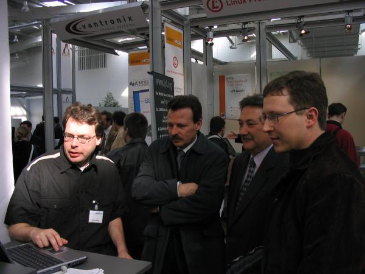
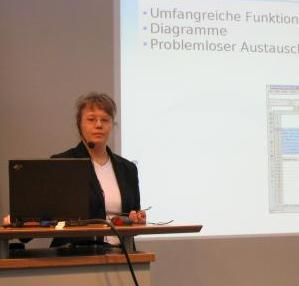
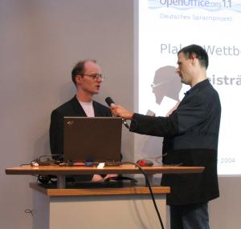

| Empfang |
|---|
| Startseite |
| Software |
| Produktinfo |
| Features |
| Download |
| CD-ROM bestellen |
| Rechtschreibprüfung |
| Dokumentation |
| Inhalt |
| Installationshandbuch |
| How-Tos |
| FAQs |
| Literatur |
| Support |
| Hilfe per Mail |
| Foren (extern) |
| Professioneller Support |
| Marketing |
| Marketing-Material |
| Veranstaltungen |
| Presse-Infos |
| Presse-FAQ |
| Über das Projekt |
| Geschichte |
| Meilensteine |
| Unterprojekte |
| Incubator |
| Whitepapers |
| Sponsoren |
| Mithelfen |
| ... aber wie? |
| Zuwendungen |
| Ansprechpartner |
| Sonstiges |
| Bildungsportal |
| Danksagungen |
| Links |
| Unsere Seiten linken |
| Rechtliches |
| Infos für Helfer |
Wir auf der CeBIT 2004
Unter dem Motto
OpenOffice.org ...passt immer
waren wir auf der Cebit 2004 an insgesamt drei Ständen präsent. Viele Anwender und am Umstieg auf
OpenOffice.org Interessierte nutzten die Möglichkeit, sich zu der freien Bürosuite für Windows, Linux, Solaris und
Mac zu informieren.
|  |
Die Stände waren immer stark umlagert. Es gab viele Fragen, wie von diesen drei Besuchern am Stand "Open Booth". Anschließend waren alle erstaunt, welche Funktionen von OpenOffice.org Ihnen noch nicht bekannt waren. |
Die Fragen bezogen sich insbesondere auf folgende Themen:
Außerdem wurden noch Fragen zu Linux gestellt und verschiedene Programmfehler geschildert.
An den Ständen im Linux-Park haben die Teammitglieder auf mitgebrachte CDs oder auf flott dekorierte Rohlinge ein OOo-ProBox-Image mit den Versionen von OpenOffice.org für mehrere Betriebssysteme gebrannt. Es gab sogar eine Box dazu; ein sehr begehrtes Mitbringsel von der Messe.
Linux-Forum
Hier wurden zwei Vorträge zu OpenOffice.org gehalten. Thomas Dierks informierte über "Betrieb von OpenOffice.org in großen Netzen" und Thomas Sprickmann zum Thema "Migration auf OpenOffice.org". Im Rahmen der Siegerehrung des Plakatwettbewerbs präsentierte Angelika Gößler vor einem breiten Publikum die Funktionen der einzelnen Module von OpenOffice.org. Ein souveräner Moderator Thomas Keup führte durch das Programm und stellte die Projektverantwortlichen und Sponsoren der Preise im Gespräch vor.
|  |  |
Weitere Bilder von OpenOffice.org auf der Cebit 2004 finden Sie hier.
Die Fotos sind dem Projekt von Andreas Mantke zur Verfügung gestellt worden. Außerhalb des Projektes
ist die Nutzung nur mit ausdrücklicher Genemigung des Fotografen und der abgebildeten Personen zulässig.
Eine genaue Übersicht zu den an der Cebit beteiligten Projektmitgliedern, den Vorträgen und den übernommenen Aufgaben findet sich auf dieser Seite.